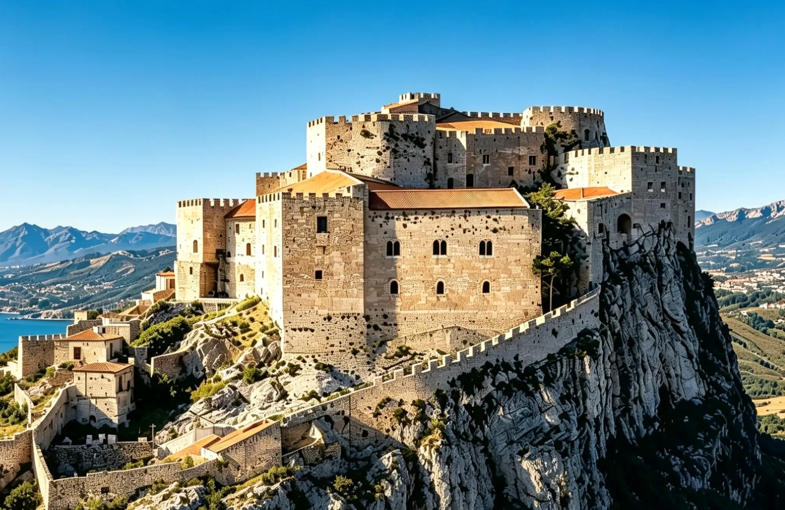

Il Castello di Caccamo

In un castello normanno forgiato dal tempo,
venite, ammirate, fermatevi un momento.
Non è solo pietra, né freddo baluardo,
ma un'anima antica che attende il tuo sguardo.
La storia non dorme, si scioglie nell'aria,
e rivive nel cuore di chi oggi ne ascolta la trama.
Non cercate risposte in vecchie carte ingiallite,
ma nel mio sguardo, tra ombre smarrite.
Sono la Castellana, custode del filo,
svelerò a chi ascolta l'antico profilo.

Il Castello non è soltanto una fortezza. È un corpo vivo che respira le trame dei Chiaramonte e le inquietudini dell'Inquisizione. Oltre le pareti che sfidano i secoli, si cela il cuore pulsante di Caccamo, un segreto che non attende di essere letto, ma di essere raccontato.
Ogni pietra conserva una voce, ogni corridoio un presagio. Non limitarti a osservare la superficie: entra nel vivo del mistero. La Castellana è qui, pronta a trasformare la tua visita in un viaggio che va oltre la storia, dritto nel mito.
Lasciati guidare oltre le soglie del tempo...